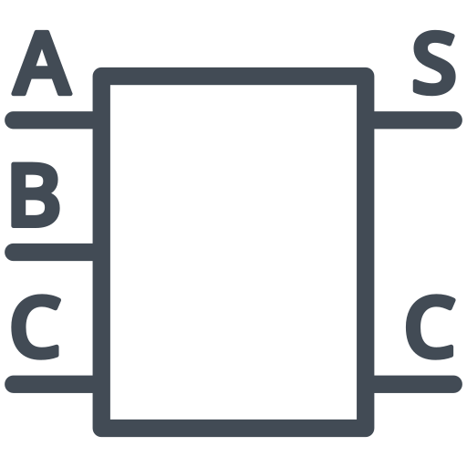

Skills
VHDL
C++ (GUI libraries, Datastructure)
SQL
C# (Windows Forms, SQL Express)
Python (Django , NumPy)
HTML, CSS, JavaScript (React, Bootstrap)
Assembly (intel 8086 , GUI interupts)
Matlab
Experience
Nov 2020 - Jun 2021
Math A Level Teacher Assistant at Cairo British School Thebes
During my tenure, I was responsible for:
- Correcting exams and assignments: I provided feedback to students on their performance and explained their mistakes.
- Data visualization and analysis: I collated all the data in Excel sheets. This helped in analyzing the performance of the students and identifying areas for improvement.
Feb 2023 - Mar 2023
Radio Planning Intern at Vodafone
I was assigned to the Radio Planning Department. During a two-week period, I had the opportunity to attend a comprehensive training program at Vodafone, where I was introduced to various technologies, systems, and vendors employed by the company. The program included:
- Lectures: These provided a wealth of information and insights into the company's operations and technologies.
- Introduction to Key Performance Indicators (KPIs): One of the many highlights of the program was learning about KPIs and the factors that can impact them.
Aug 2023 - Aug 2023
Technology & App intern
Frontend Development (JavaScript & React.js):
- Designed and implemented responsive and user-friendly web interfaces: I successfully cloned some UI functionalities from the NBE website.
- Developed interactive web pages using Vanilla JavaScript and React: I incorporated CSS animations to create a dynamic and engaging website.
- Collaborated closely with backend developers: I utilized PHP to make Ajax requests and send data to the Apache server.
- Ensured cross-browser compatibility and optimized website performance: I delivered an exceptional user experience.
Additionally, I had the chance to work with the Oracle OBI tool for report generation, gaining proficiency in this valuable tool. Moreover, I had insights into the customized tools used by the bank, including Oracle and the Flexcube system. This experience not only enhanced my technical skills but also deepened my understanding of banking operations, the services they provide, and the technologies they employ.
Projects
Project 1
Description of Project 1.
Basic-ALU--Logic-design-I
designed and implemented an arithmetic unit (ALU) that is capable of adding, subtracting, getting reminder and multiplying two signed magnitude numbers, and displays the result of the operation using three 7-segments.
See ProjectMed Connect
•Collaborated in a four-member team to develop a database project using SQL Express and Winforms C# for GUI, involving the creation of procedures for effective management.
See ProjectProject 3
Description of Project 3.
Project 3
Description of Project 3.